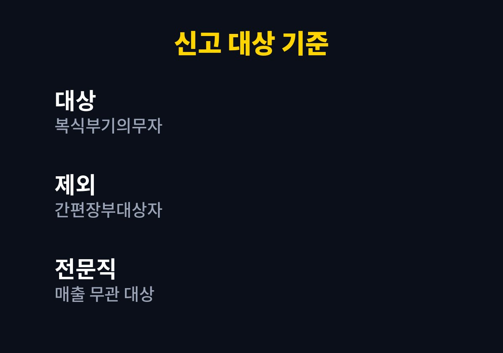
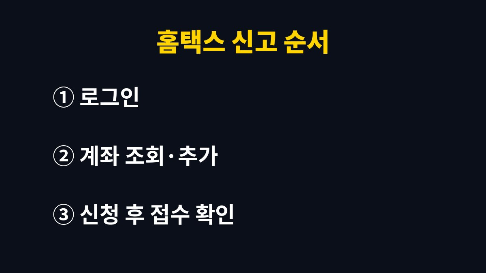

사업용계좌 신고는 소득세법상 복식부기의무자인 개인사업자만 하면 되는 제도이고, 홈택스에 계좌를 등록하는 것으로 끝납니다.
2026년 11월 기준으로 신고 대상, 홈택스 메뉴 순서, 기한과 가산세 계산 방식을 한 번에 볼 수 있게 묶었습니다.
매출이 들쭉날쭉한 1인 사업자는 내가 대상인지부터 모르는 경우가 많아서, 대상 여부를 가르는 표를 맨 앞에 두었습니다.
사업용계좌는 거래대금, 인건비, 임차료를 금융기관을 통해 주고받을 때 쓰는 사업 전용 계좌입니다.
신고 의무는 모든 개인사업자에게 있는 것이 아닙니다.
직전 연도 수입금액이 업종별 기준금액 이상이라 복식부기의무자가 된 사업자에게만 있습니다.
기준금액은 업종마다 다르므로 매출 숫자 하나만 보고 판단하지 않고 국세청 안내에서 내 업종 기준을 먼저 확인합니다.
예를 들어 온라인 판매 사업자가 직전 연도 매출이 커져서 올해부터 복식부기의무자가 되었다면, 올해 안에 계좌 신고를 마쳐야 합니다.
장부 방식이 간편장부에서 복식부기로 바뀌는 해라서 신고도 함께 챙기는 흐름입니다.
전년도 종합소득세 신고서에 적힌 장부 유형 칸을 보면 내가 어느 쪽인지 바로 알 수 있습니다.
| 구분 | 신고 의무 | 확인할 것 |
|---|---|---|
| 복식부기의무자 | 있음 | 직전 연도 수입금액이 업종별 기준 이상인지 |
| 전문직 사업자 | 있음 | 수입금액과 상관없이 복식부기의무자 |
| 간편장부대상자 | 없음 | 계좌를 나눠 두면 장부 정리는 편해짐 |
| 공동사업자 | 있음(복식부기의무자인 경우) | 1인 명의 1개 또는 각자 명의 계좌 모두 가능 |

신청은 홈택스에서 하며 세무서를 방문하지 않아도 됩니다.
화면 메뉴 이름은 개편되면서 바뀔 수 있어서 아래 순서는 큰 흐름으로만 보시기 바랍니다.
계좌추가 화면에서는 금융기관 이름과 계좌번호 칸에서 오타가 가장 흔합니다.
개인 입출금 통장이 아니라 사업 매출이 들어오는 통장을 적어야 나중에 대금 입금 내역과 맞습니다.
접수 결과 화면은 캡처해 두면 세무서에서 신고 여부를 물을 때 바로 보여 줄 수 있습니다.

새로 복식부기의무가 생긴 사업자는 그 의무가 적용되는 과세기간 개시일부터 6개월 이내에 신고합니다.
계좌를 바꾸거나 추가할 때는 종합소득세 확정신고 기간 안에 하면 됩니다.
성실신고확인대상자는 기한이 다를 수 있어서 관할 세무서나 국세상담센터에 날짜를 확인하는 편이 안전합니다.
사업용계좌를 쓰지 않은 금액이 있으면 그 금액의 0.2%가 가산세로 붙습니다.
아예 신고하지 않았다면 두 금액 중 큰 쪽에 0.2%를 곱합니다.
하나는 수입금액에 미신고 기간을 365일로 나눈 비율을 곱한 값이고, 다른 하나는 거래대금과 인건비, 임차료 같은 사용 대상 금액의 합계입니다.
창업중소기업 세액감면 같은 감면에서 빠질 수 있다는 점도 함께 알려져 있어서 가산세보다 감면 탈락이 더 아플 수 있습니다.
제 판단으로는 가산세 금액보다 감면 배제가 더 큰 손해입니다.
세액감면을 받는 사업자라면 신고 여부를 한 번 더 확인해 둘 만합니다.
고객과 거래처가 입금하는 계좌가 여러 개라면 그 계좌를 모두 신고해야 합니다.
하나만 신고해 두고 다른 계좌로 받은 매출대금이 쌓이면 미사용으로 볼 여지가 생깁니다.
사업용계좌는 사업장별로 신고합니다.
스마트스토어와 오프라인 매장을 따로 등록해 두었다면 사업장마다 계좌를 확인해 둡니다.
간편장부대상자는 의무가 없습니다.
다만 개인 카드값과 사업 매입이 한 통장에 섞이면 경비 정리가 어려워지니 의무와 상관없이 통장을 나누는 쪽이 장부 작성에 편합니다.
먼저 홈택스에서 조회하기만 눌러 내 사업장에 등록된 계좌가 있는지 확인합니다.
복식부기의무자인지 헷갈리면 관할 세무서나 세무사에게 직전 연도 수입금액과 업종 기준을 물어보는 것이 빠릅니다.
※ 본 글은 2026년 기준 공개 자료를 바탕으로 정리한 정보이며, 세금·금융 상품 선택은 본인 상황에 맞게 전문가와 확인하시길 바랍니다.